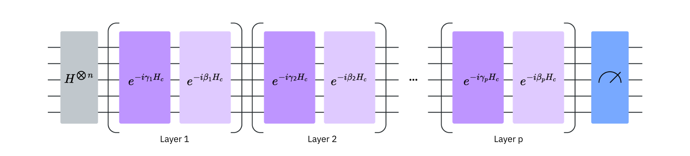
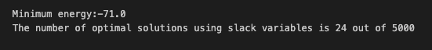
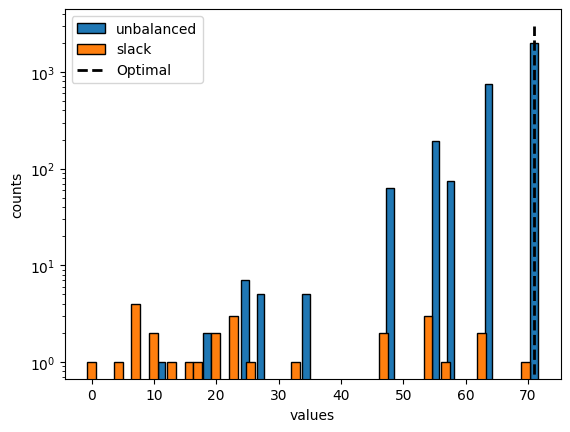
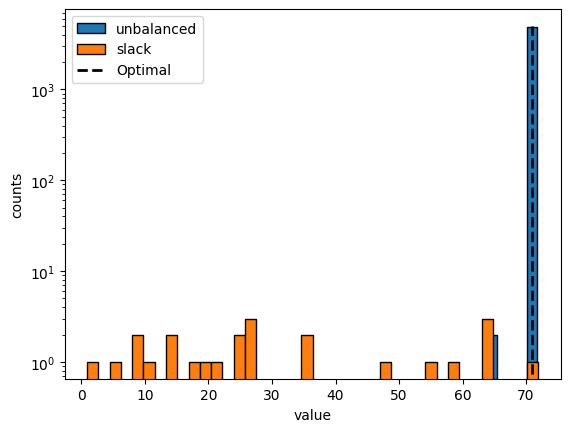

Quadratic Unconstrained Binary Optimization (QUBO), QAOA, Quantum Annealing
Leon Rode, Param Parekh, Raja Rakshit Varanasi
PHY 605 - Spring 2026
Outline
- QUBO Representation
- Knapsack Problem
- Converting Knapsack to QUBO
- Converting QUBO to Ising Model
- QAOA for Knapsack Problem
Combinatorial optimization problems using quantum computing
Promising near-term application.
- Importance: Many combinatorial optimization problems in logistics, finance, and engineering.
- The Challenge: Finding good classical solutions for large instances requires an
enormous amount of computational resources and time.
Mathematical Definition
Minimize $y$ defined by:
$$ y = \mathbf{x}^t \mathbf{Q} \mathbf{x} $$
where $\mathbf{x} \in \{0, 1\}^n$ and $\mathbf{Q}$ is a symmetric matrix.
Problem Formulation and Reduction
QUBO can solve constrained versions of combinatorial problems, as well as higher order problems.
$$
\begin{align}
\min y &= \mathbf{x}^t \mathbf{Q} \mathbf{x} \\
\text{subject to: } \mathbf{A}\mathbf{x} &= \mathbf{b}
\end{align}
$$
1. Linear to Quadratic: Any linear function in binary $x$ is quadratic
($x_i =
x_i^2$ for $x_i \in \{0, 1\}$).
2. Order Reduction: Higher-dimensional terms can be reduced to quadratic forms.
The Penalty Method
QUBO solvers only take in unconstrained problems. Hence, we need to incorporate constraints into the objective function.
To do so, we add quadratic penalties weighted
by $\lambda$.
For example, consider the constraint $x_1 + x_2 \leq 1$. Then we introduce a penalty term that is zero only if the constraint is satisfied (i.e. $x_1 = 0$ or $x_2 = 0$):
$$ \min y = \mathbf{x}^t \mathbf{Q} \mathbf{x} + \lambda(x_1 x_2)^2 $$
Penalty Encoding Pairs
Common logical constraints and their corresponding quadratic penalties:
| Classical Constraint |
QUBO Penalty |
| $x_i + x_j \leq 1$ |
$\lambda(x_i x_j)^2$ |
| $x_i + x_j \geq 1$ |
$\lambda(1 - x_i - x_j + x_i x_j)^2$ |
| $x_i + x_j = 1$ |
$\lambda(1 - x_i - x_j + 2x_i x_j)^2$ |
| $x_i \leq x_j$ |
$\lambda(x_i - x_i x_j)^2$ |
| $x_i + x_j + x_k \leq 1$ |
$\lambda(x_i x_j + x_i x_k + x_j x_k)^2$ |
| $x_i = x_j$ |
$\lambda(x_i + x_j - 2x_i x_j)^2$ |
An example of Order Reduction
Reduce a cubic term $x_1 x_2 x_3$ to quadratic form by defining $x_4 = x_1
x_2$:
1. Transformation:
$$ y = \textcolor{red}{ x_1 x_2} x_3 \rightarrow y = \textcolor{red}{x_4} x_3 $$
2. Enforce via Penalty Term:
$$ y = \textcolor{red}{x_4} x_3 + \lambda(x_1 x_2 - 2x_1 x_4 - 2x_2 x_4 + 3x_4) $$
3. Recursion for Higher Order Cases:
Higher order terms follow the same logic:
$$ \textcolor{red}{x_1 x_2} x_3 x_4 \rightarrow \textcolor{red}{x_5}\textcolor{blue}{x_3} x_4 \rightarrow \textcolor{blue}{x_6} x_3 $$
with penalties enforcing $x_5=x_1 x_2$ and $x_6 = x_5 x_3$.
General Linear Inequalities and Slack Variables
To encode a more general inequality $\sum a_i x_i \leq b$ into the objective function, introduce a slack variable $s \in [0,
b]$ so that the inequality becomes an equality: $\sum a_i x_i + s = b$. Then write $s$ in binary:
$$ s = \sum_{i=0}^{N-1} 2^i s_i $$
where $N = \lfloor \log_2(b) \rfloor$ and $s_i \in \{0,
1\}$.
Letting $k = \sum_{i=1}^n a_i x_i$, the penalty term is
$$ \lambda\left(\sum_{i=1}^n a_i x_i + s - b\right)^2 = \lambda(k + s - b)^2 $$
Case I - Valid Assignment when $k ≤ b$: A valid choice of $s$ (specifically $s = b - k$) can be "learned" by the solver, and the penalty term becomes $$ \lambda (k + (b-k) - b)^2 = 0 $$
Case II - Invalid Assignment when $k > b$. Then $k = b + \Delta$ for some $\Delta > 0$, and the penalty term is $$ \lambda (b + \Delta + s - b)^2 = \lambda (\Delta + s)^2 > 0 $$ since $s \geq 0$ and $\Delta > 0$.
The General Form of QUBO
In summary, with the tools of order reduction and penalty terms, we can turn constrained binary optimization problems into an unconstrained binary optimization problem of the form:
$$ \min y = \mathbf{x}^t \mathbf{Q} \mathbf{x} + \sum_{i=1}^N \lambda_i g_i(\mathbf{x})^2 $$
where $\lambda_i g_i(\mathbf{x})^2$ are the weighted penalty terms for each of $N$ constraints.
Knapsack Problem
Problem Description: 5 items (⚽️, 💻, 📸, 📚, 🎸) with
varying importance and limited knapsack space. Goal: maximize total value.
Variables: Let $x_i \in \{0, 1\}$ represent
whether we
bring the $i$-th item ($1$) or not ($0$). $\mathrm{x} = \{x_0:⚽️, x_1:💻, x_2:📸, x_3:📚, x_4:🎸\}$
Objective Function: Maximize the weighted sum value of
the items:
$$ \max_x f(\mathrm{x}) = 8x_0 + 47x_1 + 10x_2 + 5x_3 + 16x_4 $$
Because solvers typically minimize, we minimize the negative of
our objective:
$$ \min_x -(8x_0 + 47x_1 + 10x_2 + 5x_3 + 16x_4) $$
1. The Weight Constraint: The knapsack maximum
weight is $W = 26$.
$$ 3x_0 + 11x_1 + 14x_2 + 19x_3 + 5x_4 \le 26 $$
2. Slack Variables: Convert to
equality using a binary slack variable $S \in [0, 26]$ :
$$ \sum w_i x_i + S = 26 \quad \text{where} \quad S = x_5 + 2x_6 +
4x_7 + 8x_8 + 16x_9 $$
3. Penalty Term: Add a
quadratic penalty scaled by $\lambda$ to enforce the constraint:
$$ p(x,s) = \lambda \left(3x_0 + 11x_1 + 14x_2 + 19 x_3 + 5x_4 + x_5
+ 2 x_6 + 4x_7 + 8 x_8 + 16 x_9 - 26\right)^2 \tag{5}$$
Combining the objective and penalty term gives the
unconstrained form:
$$ \min_{x,s} \left( -\sum v_i x_i + \lambda \left(\sum w_i
x_i + S - W\right)^2 \right) $$
Expanding this yields the matrix $\mathbf{Q}$:
$$ Q_{ij} = 2\lambda w_i w_j, \quad Q_{ii} = -v_i + \lambda
w_i(w_i - 2W) $$
Conversion to Ising Model
The final step to represent the QUBO problem on QPUs is mapping
binary variables $x_i \in \{0, 1\}$ to spin variables $z_i \in \{1, -1\}$ via the
transformation:
$$ x_i = \frac{1 - z_i}{2} $$
Substituting this into our QUBO objective yields
an Ising Hamiltonian with quadratic/linear terms and a constant $O$:
$$ H_c(\mathrm{z}) = \sum_{i, j > i}^{n} J_{ij} z_i z_j +
\sum_{i=1}^n h_i z_i + O $$
- $J_{ij}$: Interaction terms between
spins, depending on the problem structure.
- $h_i$: Linear terms (local magnetic
fields).
Circuits and Hamiltonians
Quantum gates are implemented via time evolution under a Hamiltonian $H$, described by the unitary
operator:
$$ U(H, t) = e^{-iHt/\hbar} $$
Implementing a circuit that exactly exponentiates a Hamiltonian with many non-commuting terms is
challenging. We use the Trotter-Suzuki decomposition formula to approximate the
evolution.
Trotter-Suzuki Decomposition
To implement an approximate time-evolution unitary for $H = \sum_k H_k$:
$$ e^{A+B} \approx \left(e^{A/n} e^{B/n}\right)^n $$
This allows us to approximate the full evolution operator $U(H, t)$ by a product of simpler
unitaries:
$$ U(H, t, n) = \prod_{j=1}^n \prod_k e^{-iH_k t / n} $$
QAOA
- An approach to find the ground state of the $H_c$.
- It prepares a quantum state where low-energy states have high
probabilities.
- Probabilistic: does not guarantee the optimal solution.
QAOA
- In the simplest version of QAOA, it alternates cost unitaries
$e^{-i\gamma H_C}$ and mixer unitaries $e^{-i\beta H_M}$.

QAOA
-
We start with a uniform superposition $|+\rangle^{\otimes n}$.
- As $H_C |x\rangle = f(x) |x\rangle$,
$$e^{-i\gamma H_C} |x\rangle = e^{-i\gamma f(x)} |x\rangle$$
- This doesn't change probabilities but it changes
phase according
to the cost.
QAOA
-
We apply the mixer unitary $e^{-i\beta H_M}$, where
$$ H_M = \sum_i X_i$$
- The mixer can change probabilities. But it does
not know which strings are good or bad. It just mixes them around blindly.
Single Qubit Example
- Let's say $f(0) \lt f(1)$
- Cost hamiltonian $H_C = -Z$ as
- $H_C |0\rangle = -|0\rangle$
- $H_C |1\rangle = +|1\rangle$
- Mixer will remain the same $H_M= X$
Single Qubit Example
- Start state: $|+\rangle$
- Apply cost unitary $e^{i\gamma Z}$:
$$e^{i\gamma Z} |+\rangle = e^{i\gamma}
|0\rangle + e^{-i\gamma} |1\rangle$$
- Apply mixer unitary $e^{-i\beta X}$:
$$
\begin{aligned}
e^{-i\beta X}( e^{i\gamma} |0\rangle + e^{-i\gamma} |1\rangle) &=
(\cos\beta e^{i\gamma} - i\sin\beta e^{-i\gamma}) |0\rangle \\
&+ (\cos\beta e^{-i\gamma} - i\sin\beta e^{i\gamma}) |1\rangle
\end{aligned}
$$
QAOA
- $H_C$: Applies a phase depending on the cost $f(x)$.
- $H_M$: Mixes the amplitudes to shift probability towards better
solutions (lower energy).
- Prepare the initial state $|+\rangle^{\otimes n}$.
- Pick parameters $\gamma_i$ and $\beta_i$.
- Apply unitaries: $e^{-i\gamma_i H_C}$ and $e^{-i\beta_i H_M}$
- Repeat for $p$ layers
- Return the measurement of the final state
Picking Parameters
- This part is classical. The simple QAOA treats $\gamma_i, \beta_i$ as mostly free parameters.
- Alternatively, we can do a annealing style parametrization. These are no
longer independent.
- In quantum annealing, We move from ground state of one hamiltonian to another,
$$H(t)=(1−s(t))H_1+s(t)H_2$$
Picking Parameters
- Process: Start in ground state $|+\rangle^{\otimes n}$ of mixer $H_M$ and
move slowly to ground state of $H_c$.
-
QAOA can be viewed as a discretized version of this continuous process.
- Annealing parametrization:
- Move $\beta_i$ linearly from $1 \rightarrow 0$.
- Move $\gamma_i$ linearly from $0 \rightarrow 1$.
Benchmarking QAOA: Slack

- Initially, you may think it is not improving the performance as the
naive search
gives $5000/2^5 \approx 156$ solutions.
- But we are looking at it wrong because slack bits expanded the ecoding space
and the naive search here could get $5000/2^{10} \approx 5$ solutions only. So this actually
gave a
small improvement.
Unbalanced Penalization
- We set a new penalty without the slack bits
$$ \min_{x,s} (f(x) + p(x,s)) = \min_{x,s} \left[ -\sum_i v_i x_i + \lambda_1 \left(\sum_i
w_i x_i - W\right) + \lambda_2 \left(\sum_i w_i x_i - W\right)^2 \right]$$
- Unlike slack approach where the penalty is >0 for infeasible $x$ and 0 for
feasible $x$,
- The penalty for the infeasible is more than the feasible.
Benchmarking QAOA: Slack vs Unbalanced
- Unbalanced approach sampled 71 (optimal value) 1974 times out of 5000.

Benchmarking Quantum Annealing: Slack vs Unbalanced
- We used the quantum annealer D-Wave Advantage. We obtain 71 (optimal) 2046 times out of 5000.

Conclusion
- We have seen how to convert a combinatorial optimization problem to a QUBO problem and then to an Ising model.
- We have seen how to use QAOA to solve the Knapsack Problem.
- We have seen how to use quantum annealing to solve the Knapsack Problem.